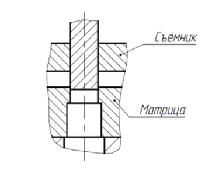
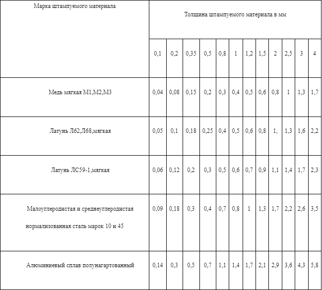

При выполнении технологических операций пробивки, вырубки, вытяжки, гибки и др.заготовка или готовая деталь стремятся остаться на пуансоне или в матрице. Причиной тому могут быть напряжения разгрузки, трение, особенности конструкции детали и др.
Для освобождения пуансона, матрицы снятия с них заготовки или детали применяются различного рода удаляющие элементы: съемники и выталкиватели. Съемники могут быть мягкими (подвижными) и жѐсткими (неподвижными). Жѐсткий съемник выполнен в виде плиты, жестко соединенной с матрицей
В штампах совмещенного действия допустимый максимальный зазор z/2 между съемником и пуансоном-матрицей принимают по табл.
Максимальный зазор z1/2 между матрицей и выталкивателем, а также между выталкивателем и пуансоном принимают по табл. 18 и 19 с коэффициентом 0,5—0,8 или по табл. 82 в зависимости от требуемой точности направления пуансона.
В штампах с верхним прижимом зазоры между съемником и пуансоном рекомендуется принимать по скользящей посадке 2 или 3-го класса точности, в зависимости от предусмотренной точности сопряжения пуансона и съемника.
Высота уступа прижима h определяется по формуле h= (H — S) — 0,05, где Н — толщина направляющих планок в мм; S — толщина штампуемого материала в мм.
Прижимы (съемники) для вытяжных штампов. Они выполняются из стали такой же марки, что и вытяжные матрицы, и с такой же твердостью.
Все сквозные отверстия (под винты, штифты, упоры и т. п.) в прижимах (съемниках) вытяжных штампов следует располагать вне рабочей зоны прижима (съемника). При необходимости расположения отверстий в рабочей зоне их следует выполнять глухими. Применять пробки-заглушки не рекомендуется.